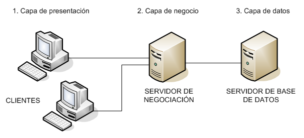
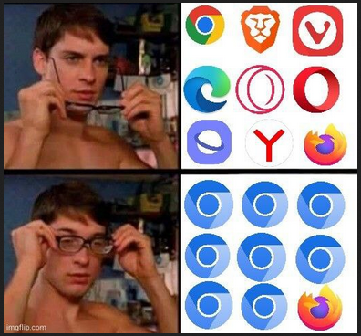
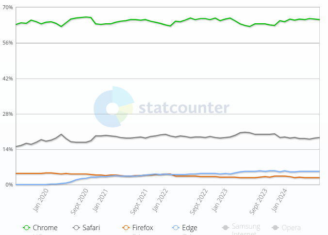

UD1 - Arquitectura y herramientas
Introducción al desarrollo web en entorno del cliente.
1- Arquitectura de desarrollo web
Presentación inicial en inglés.
Arquitectura de 3 capas.

Áreas de uso del desarrollo web:
- Sitios web o blogs (https://www.microsiervos.com/ o https://www.filmaffinity.com/es/main.html/)
- Landing page de productos (https://www.firewatchgame.com/)
- Curriculos (https://stan-gabriel.github.io/#home o https://sebascampeon.github.io/cvdeveloperpr/)
- E-commerce (Amazon, Ebay, Alcampo, PC Componentes...), Shopify, PrestaShop,...
- Redes sociales (https://www.pinterest.es/ o https://www.instagram.com/)
- Aplicaciones web (https://www.canva.com/es_es/ o https://docs.google.com/document/u/0/?hl=es)
- Servicios de vídeo (Google Meet, Youtube, Twitch...)
- Aplicaciones móviles (React Native, PWA)
- Servidores (Next, Express, Node JS, Deno)
- Aplicaciones de escritorio (Electron, Tauri, ... pero también Excel o LibreOffice Calc)
- Juegos (Phaser, GDevelop, MelonJS, PixiJS,...) y arte 3D (https://threejs.org/examples/#webgl_animation_keyframes)
- Etc.
2- Lenguajes de programación en clientes web
En el lado del servidor tenemos múltiples lenguajes para elegir: PHP, Java, C#, Javascript, Python... pero del lado del cliente sólo está Javascript o lenguajes que transpilan a Javascript como Typescript.
Características
Algunas características generales:
- Interpretados: el código fuente se ejecuta directamente por un intérprete en el navegador en tiempo real (no se compilan, aunque sí se optimizan usando un JIT o similar)
- Multiplataforma: se pueden ejecutar en diferentes sistemas operativos y navegadores web sin modificaciones significativas
- Acceso al DOM: permiten la manipulación dinámica de elementos HTML, CSS y la interacción con el usuario
- Amplio desarrollo: muchísima información, foros, comunidades, bibliotecas, frameworks...
- Seguros: se ejecutan en un sandbox y no tienen acceso directo al sistema de ficheros del sistema operativo (por eso te puedes meter en una web desconocida sin grandes riesgos). Además cada pestaña del navegador se ejecuta en su propio contenedor separado de las demás (el código de una pestaña no puede afectar a las demás salvo casos excepcionales como que una pestaña cree otra).
- Comunicación con el servidor: permiten realizar peticiones entre el cliente y el servidor para recuperar datos
- Evolución continua: no dejan de producirse novedades tanto en el propio lenguaje como en su ecosistema
Específicas de Javascript:
- Lenguaje de script → interpretado
- Universal, multiplataforma y portable: principalmente utilizado en el lado del cliente, pero disponible para el servidor y para crear aplicaciones de escritorio o de móviles
- Asincronía: JavaScript es especialmente bueno para manejar operaciones asíncronas, como solicitudes HTTP y eventos del usuario, sin bloquear la ejecución del código
- Un único hilo de ejecución: javascript no soporta programación multihilos (setInterval( ()=>console.log("Javier"),1000); alert("Mancera");)
- Tipado débil y dinámico: tipado débil → las variables pueden cambiar de tipo durante la ejecución (se hace automáticamente, a veces se presupone a qué se necesita convertir), dinámicos → se infiere su tipo durante la ejecución
- Funciones de primera clase (first class citizen): se pueden pasar como argumentos, asignar a variables y devolver como resultados.
- Orientado a objetos, orientado a eventos y programación funcional: JS se basa en el uso de prototipos, pero soporta el uso de clases. Está diseñado para la programación funcional y orientada a eventos.
- Case-sensitive: distingue mayúsculas de minúsculas
function sumar(a, b) {
return a + b;
}
// válido
let numero = sumar(5, 10);
let texto1 = sumar("hola", 10);
let texto2 = sumar("hola", " caracola");
Específicas de Typescript:
- Compatible con JS. TS compila/transpila a JS y se puede incluir ficheros .js en un proyecto de ts.
- TS es un superconjunto de JS (TS = JS + Características adicionales)
- Permite tipados dinámicos en variables, argumentos, valores de retorno → errores en tiempo de compilación y no de ejecución. Se declara el tipo al crear la variable (también se puede inferir en ocasiones)
- Tipado fuerte → no se permiten conversiones implícitas
- Permite especificar interfaces (como concepto de OOP) y decoradores
Ejemplo:
function sumar(a: number, b: number): number {
return a + b;
}
// válido
let resultado: number = sumar(5, 10);
// erróneo: resultado es de tipo number y la variable y argumento de tipo string
let texto: string = sumar(5, "hola");
Herramientas y utilidades de programación
Algunas herramientas y utilidades:
- IDE: Visual Studio Code, NetBeans, Eclipse,...
- Editores de texto: VIM, Notepad++, Kate, Gedit, micro,...
- Linter y analizadores estáticos de código (errores de estilo, patrones potencialmente incorrectos, code smells, ...)
- Herramientas de formateo: Prettier
- Control de versiones: Git, Subversion, Mercurial,...
- Gestión de paquetes y dependencias: npm, yarn, pnpm, ...
- Herramientas de construcción y automatización: Vite, Webpack
- Pruebas unitarias y marco de pruebas: Jest (JavaScript), Vitest, Playwright, Testing Library...
- Herramientas de virtualización y contenedores: Docker, Kubernetes, VirtualBox
Integración de código Javascript con HTML
Hay varias maneras de integrar el código JS en un fichero HTML.
Directamente incrustado
<!DOCTYPE html>
<html>
<head>
<title>Mi Página</title>
</head>
<body>
<h1>Ejemplo 1</h1>
<script>
// Código JavaScript en línea
alert("¡Hola, mundo!");
</script>
<p>Bla bla bla...</p>
</body>
</html>
Incrustado + usando un manejador de eventos de HTML
<!DOCTYPE html>
<html>
<head>
<title>Mi Página</title>
</head>
<body>
<h1>Ejemplo 2</h1>
<button onclick="saludar()">Saludar</button>
<script>
function saludar() {
alert("¡Hola, mundo!");
}
</script>
<p>Bla bla bla...</p>
</body>
</html>
Incrustado + usando un manejador de eventos de JS
<!DOCTYPE html>
<html>
<head>
<title>Mi Página</title>
</head>
<body>
<h1>Ejemplo 3</h1>
<button id="miBoton">Saludar</button>
<script>
// Adjuntar un manejador de eventos a través de JavaScript
document.getElementById("miBoton").addEventListener("click", function() {
alert("¡Hola, mundo!");
});
</script>
<p>Bla bla bla...</p>
</body>
</html>
En un fichero externo
Esta será la opción preferida porque los navegadores pueden cachear el código.
<!DOCTYPE html>
<html>
<head>
<title>Mi Página</title>
<script defer src="mi-script.js"></script>
</head>
<body>
<h1>Ejemplo 4</h1>
<!-- Contenido de la página -->
</body>
</html>
En un fichero externo como módulo
El más moderno y avanzado, pero necesita un servidor web ejecutándose para funcionar. Se puede usar la extensión Live Server (https://marketplace.visualstudio.com/items?itemName=ritwickdey.LiveServer) durante el desarrollo.
Permite hacer uso de import y require para añadir la funcionalidad de otros módulos.
Fichero index.html:
<!DOCTYPE html>
<html>
<head>
<title>Mi Página</title>
<script type="module" src="code.js"></script>
</head>
<body>
<h1>Prueba con modules</h1>
<div id="app"></div>
</body>
</html>
Fichero code.js: fíjate que incluye una función del fichero './modules/saludo.js'
"use strict";
import { saludo } from './modules/saludo.js';
document.querySelector('#app').innerHTML = saludo('hola caracola');
Fichero ./modules/saludo.js: se declaran dos funciones pero sólo se exporta una.
export function saludo(mensaje) {
return "<p>" + mensaje + "</p>";
}
function hola(){return "hola caracola"}
Aspectos importantes
Importante: Los scripts se colocan al final del <body> o en la etiqueta <head> con un atributo defer.
De esta manera nos aseguramos de que el código se empezará a ejecutar cuando todos los elementos del HTML hayan sido cargados. De estos dos métodos el preferido es el que se incluye en el <head> por temas de rendimiento.
Nota: con los scripts type="module" no es necesario usar el defer, el navegador ya hace que funcione así por defecto, pero tampoco pasa nada por indicarlo explícitamente.
Usaremos "use strict"; como la primera línea de nuestro código. Esto nos ahorrará problemas futuros al ser ligeramente más estricto con las variables y permitirá algunas opcimizaciones en el código.
Otras tecnologías
Otras tecnologías implicadas en el desarrollo web son las siguientes:
- CSS
- JSON
- XML
- SVG, GIF, JPEG, WEBP, PNG...
- HTTP, DNS, API, CORS...
Roadmap to become a frontend developer: https://roadmap.sh/frontend
Además de frameworks y tecnologías varias como:
- Del lado del servidor: Node.js, PHP, ASP.net,...
- Servidores web como Express, Nginx, Apache...
- Frameworks reactivos: React, Angular, Vue, Svelte...
- Frameworks de CSS: Tailwind, Bootstrap, Open props...
- Control de versiones: Git, Github,...
- Docker, Kubernetes,...
- HTMx, Bun, Astro o Next, Vite, Jest, npm, Electron o Tauri...
- Documentación: Notion, ZIM, JSdoc...
Navegadores
Un navegador (web browser en inglés) es una aplicación que permite interpertar el código HTML, CSS y Javascript para generar contenido en una ventana.
Actualmente casi todos los navegadores comparten el mismo motor de renderizado de Google Chrome salvo dos excepciones:
- Blink: Google Chrome, Chromium, Vivaldi, Edge, Opera, Brave, Samsung Internet Browser... incluye el motor v8 de Javascript que usa Deno, Electron, Node, VSCode...
- Webkit: usado por Safari (su motor de JS es JavaScriptCore).
- Gecko: usado por Firefox. Su motor de JS es SpiderMonkey y es usado también por MongoDB, Adobe Reader, GNOME, CouchDB
- Trident: Internet Explorer y otras abominaciones del infierno. Su motor de JS se llamaba Chakra
Todos los motores de renderizado tienen licencia de software libre (salvo el de Microsoft, claro).
https://en.wikipedia.org/wiki/Comparison_of_browser_engines
Nota: Apple no permite que en iOS se use otro motor de renderizado que no sea WebKit, haciendo que todos los navegadores allí sean simplemente skins sobre Safari. En MacOS no existe esa restricción.

Cuota de mercado de los navegadores
Google Chrome y sus derivados dominan el mercado de los navegadores con un 70% de cuota aproximada.
En la imagen de abajo se puede ver una gráfica de la evolución de la cuota de mercado de los principlaes navegadores en los últimos 5 años en el escritorio en España.

Página con estadísticas
https://gs.statcounter.com/browser-market-share
Web: Can I use...
Nota: uno de los argumentos que se arguye sobre el uso de Firefox es que por defecto bloquea muchos scripts de análisis por motivos de privacidad (Google Analytics), lo que hace que no se identifique correctamente.
IDE
El que vamos a usar es Visual Studio Code (https://code.visualstudio.com/, online: http://vscode.dev/) con estas extensiones.
Mínimas:
- Live Server (Ritwick Dey)
- Google Fonts (Lior Chamla)
- Todo Tree (Gruntfuggly)
- Document this
- ESLint
Interesantes:
- Debugger for firefox
- AWS Code Whisperer o Copilot
- HTML CSS Support (para Tailwind o Bootstrap)
Temas:
- Claros:
- Coding Theme Light (Rajeswaran)
- NetBeans Light Theme (Ondrej Brejla)
- Oscuros:
- Vue Theme (mariorodeghiero)
- Lucario
- Night Wolf
- Material Icon Theme (Philipp Kief)